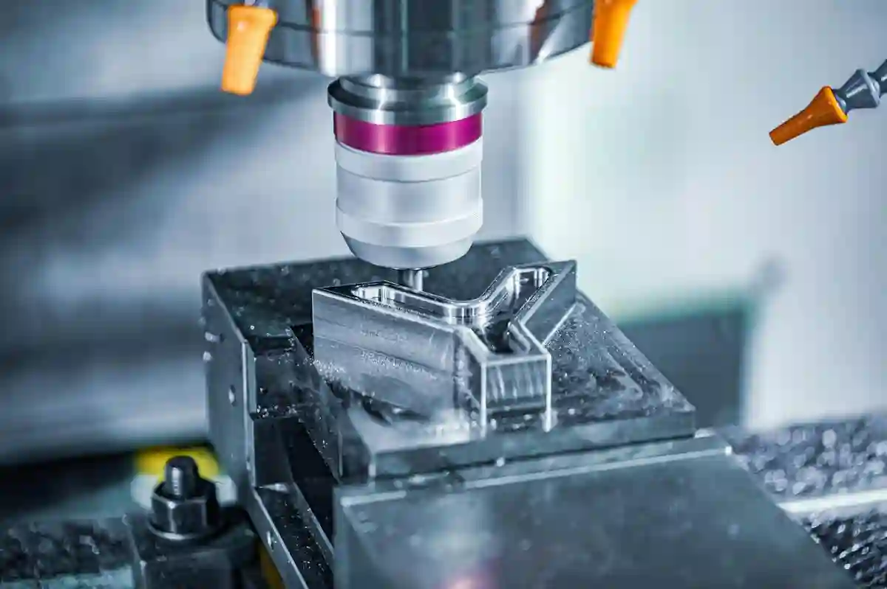

Prototip Parça Üretimi Nedir? Tasarımdan Üretime Süreç Rehberi
Yeni bir ürün fikrinin pazara sunulmadan önce doğrulanması, test edilmesi ve üretilebilirliğinin kanıtlanması gerekir. Bu noktada prototip parça üretimi, ürün geliştirme döngüsünün merkezinde yer alan stratejik bir imalat adımı olarak öne çıkar. Kavramsal tasarımların fiziksel bir ürüne dönüşmesini sağlayan bu süreç; mühendislik doğrulaması, fonksiyonel testler ve seri üretime hazırlık açısından kritik rol oynar.
Endüstriyel üretimde prototip aşaması yalnızca bir “ön deneme” değildir. Aksine, doğru kurgulanmış bir prototip üretim süreci, hem maliyet risklerini azaltır hem de nihai ürün performansını doğrudan etkiler. Özellikle talaşlı imalat altyapısına sahip firmalarda, CNC tabanlı çözümler sayesinde yüksek hassasiyetli prototipler kısa sürede üretilebilir.
Bu rehberde; tasarımdan prototipe geçiş, CNC destekli üretim yöntemleri, Ar-Ge odaklı imalat yaklaşımları ve ürün geliştirme süreçlerinde prototipin neden vazgeçilmez olduğu teknik ama anlaşılır bir dille ele alınacaktır.
Prototip Parça Üretimi Kavramının Endüstrideki Yeri
Modern imalat sektöründe ürün geliştirme prototipi, yalnızca mühendislik ekiplerinin değil, üretim ve kalite departmanlarının da ortak çalışma alanıdır. Bir ürünün dijital ortamda çizilmesi, onun üretilebilir olduğu anlamına gelmez. İşte bu noktada prototip parça üretimi, tasarımın sahadaki gerçek koşullarla uyumunu test etme imkânı sunar.
Prototip aşamasında üretilen parçalar; montaj uyumu, tolerans davranışı, yüzey kalitesi ve fonksiyonel performans gibi kritik kriterler açısından değerlendirilir. Bu değerlendirmeler, seri üretim öncesinde geri dönüşü zor hataların önüne geçilmesini sağlar. Özellikle düşük adetli fakat yüksek hassasiyet gerektiren projelerde, prototip süreci doğrudan ürün başarısını belirler.
Seri Üretimden Önce Neden Prototip Gerekir?
Seri üretime geçmeden önce yapılan her teknik doğrulama, uzun vadede zaman ve maliyet avantajı sağlar. Ar-Ge prototip imalatı, tasarım varsayımlarının gerçek malzeme ve üretim koşulları altında test edilmesini mümkün kılar. Böylece tasarım kaynaklı revizyonlar, seri üretim aşamasına taşınmadan çözülebilir.
Ayrıca prototip üretimi; tedarik zinciri planlaması, üretim süresi optimizasyonu ve kalite standartlarının belirlenmesi açısından da referans niteliği taşır. Bu nedenle prototip aşaması, yalnızca mühendislik değil, stratejik üretim planlamasının da ayrılmaz bir parçasıdır.
Tasarımdan Prototipe Geçiş Süreci Nasıl Kurgulanır?
Bir ürünün başarılı bir prototipe dönüşmesi, doğru planlanmış bir geçiş sürecine bağlıdır. Tasarımdan prototipe geçiş, CAD verilerinin üretim gerçeklerine uygun şekilde analiz edilmesini ve uygun imalat yönteminin seçilmesini gerektirir. Bu aşamada toleranslar, malzeme seçimi ve üretim yöntemi birlikte değerlendirilir.
Yanlış kurgulanan bir geçiş süreci, prototipin amacını yerine getirememesine neden olur. Bu nedenle üretim altyapısı güçlü firmalarda, tasarım ekibi ile imalat ekibi arasında doğrudan iletişim kurulması büyük önem taşır.
CAD Verilerinin Üretime Uygunluğu
Dijital tasarımlar her zaman üretime hazır değildir. Özellikle CNC tabanlı prototip CNC üretim süreçlerinde, takım erişimleri, bağlama yüzeyleri ve işleme sıraları tasarım üzerinde revize edilmelidir. Bu revizyonlar, prototipin hem hızlı hem de hatasız üretilmesini sağlar.
Prototip Üretim Sürecinde Kullanılan Temel Yöntemler
Prototip parça üretimi, tek bir üretim yöntemiyle sınırlı değildir. Ürünün fonksiyonu, hedeflenen toleranslar, kullanılacak malzeme ve nihai üretim yöntemi; prototip aşamasında tercih edilecek teknolojiyi doğrudan etkiler. Bu nedenle prototip üretimi, standart bir reçeteden ziyade projeye özel kurgulanması gereken bir süreçtir.
Endüstride yaygın olarak kullanılan prototip yaklaşımları arasında CNC talaşlı imalat, eklemeli imalat (3D baskı) ve düşük adetli kalıp çözümleri yer alır. Ancak özellikle mekanik dayanım, ölçüsel doğruluk ve montaj uyumu test edilecekse, CNC tabanlı yöntemler öne çıkar.

CNC Tabanlı Prototip Üretiminin Avantajları
Prototip CNC üretim, seri üretimde kullanılacak gerçek malzemelerle birebir parça elde edilmesini mümkün kılar. Bu yaklaşım sayesinde prototip, yalnızca görsel bir model değil; fonksiyonel testlere uygun, ölçülebilir bir referans parça hâline gelir.
CNC ile üretilen prototiplerde; tolerans davranışı, yüzey kalitesi ve işlenebilirlik doğrudan gözlemlenebilir. Bu da seri üretime geçmeden önce takım yollarının, bağlama stratejilerinin ve işlem sıralarının doğrulanmasını sağlar. Özellikle hassas parça gerektiren sektörlerde, CNC prototipler geri dönüşü olmayan hataların önüne geçer.
Bu yaklaşım, Özel CNC Parça Üretimi Nedir? Hangi Yöntem Ne Zaman Kullanılır? başlıklı içerikte detaylı olarak ele alınan üretim stratejilerinin erken aşamada test edilmesini de mümkün kılar.
Ar-Ge Odaklı Prototip Yaklaşımı Neden Farklıdır?
Her prototip aynı amaca hizmet etmez. Bazı projelerde hedef yalnızca geometrik doğrulama iken, bazı projelerde performans, dayanım ve uzun süreli kullanım testleri ön plandadır. Bu noktada ar-ge prototip imalatı, klasik prototip anlayışından ayrışır.
Ar-Ge odaklı projelerde prototip, çoğu zaman birden fazla revizyon döngüsünden geçer. Her iterasyonda tasarım verileri güncellenir, üretim parametreleri yeniden değerlendirilir ve elde edilen sonuçlar mühendislik kararlarını yönlendirir. Bu nedenle Ar-Ge prototiplerinde üretim altyapısının esnek olması kritik bir avantaj sağlar.
Ar-Ge Süreçlerinde Özel Parça İmalatının Rolü
Ar-Ge projelerinde standart parçalar çoğu zaman yeterli olmaz. Bu aşamada devreye giren özel parça imalatı, tasarıma özel çözümler üretilmesini sağlar. Özellikle deneysel ürünlerde, prototip parçaların hızlı revize edilebilir olması geliştirme sürecini ciddi ölçüde hızlandırır.
Bu yaklaşımın detayları, Ar-Ge Süreçlerinde Özel Parça İmalatının Rolü başlıklı içerikte üretim perspektifiyle ele alınmaktadır. İlgili yazı, Ar-Ge projelerinde prototip üretiminin neden stratejik bir yatırım olduğunu net biçimde ortaya koyar.
Tasarımdan Prototipe Geçişte Kritik Karar Noktaları
Tasarımdan prototipe geçiş, yalnızca CAD dosyasının üretime verilmesi değildir. Bu aşamada alınan teknik kararlar, prototipin amacına hizmet edip etmeyeceğini belirler. Malzeme seçimi, tolerans aralıkları ve yüzey gereksinimleri birlikte değerlendirilmelidir.
Yanlış malzeme ile üretilen bir prototip, seri üretimde karşılaşılacak sorunları maskeleyebilir. Aynı şekilde gereğinden sıkı toleranslar, prototip maliyetini artırırken gerçekçi olmayan beklentiler yaratabilir. Bu nedenle geçiş sürecinde mühendislik ve üretim ekiplerinin ortak karar alması gerekir.
Ürün Geliştirme Prototiplerinde Malzeme Seçimi
Ürün geliştirme prototipi, nihai ürünle mümkün olduğunca aynı malzemeden üretilmelidir. Bu sayede mekanik davranışlar, ısıl genleşme ve yüzey performansı gerçek koşullara yakın şekilde test edilir. Alternatif malzemeler yalnızca konsept doğrulama aşamasında tercih edilmelidir.
Bu noktada üretim altyapısı güçlü firmalar, prototip aşamasında farklı malzemelerle deneme yaparak en uygun çözümü kısa sürede belirleyebilir. Bu esneklik, ürün geliştirme süresini kısaltan önemli bir faktördür.
Prototip Üretim Süreci ile Seri Üretim Arasındaki Bağlantı
Başarılı bir prototip üretim süreci, seri üretimin altyapısını hazırlar. Prototip aşamasında doğrulanan üretim yöntemleri, seri üretimde ölçeklenebilir hâle getirilir. Bu sayede seri üretime geçildiğinde sürpriz maliyetler ve kalite problemleri minimize edilir.
Ayrıca prototip üretimi sırasında elde edilen ölçüm verileri, kalite kontrol planlarının oluşturulmasında referans olarak kullanılır. Bu durum, özellikle düşük toleranslı parçaların seri üretiminde büyük avantaj sağlar.
Bu bütünsel yaklaşım, Özel Parça İmalatı Blog altında ele alınan pek çok üretim senaryosunun temelini oluşturur ve prototip aşamasının neden ayrı bir disiplin olarak ele alınması gerektiğini açıkça gösterir.
Prototip Parça Üretim Süreci Nasıl İlerler?
Başarılı bir prototip parça üretimi, rastgele adımlardan oluşan bir süreç değildir. Aksine; tasarım doğrulama, üretim planlama, imalat ve kalite kontrol aşamalarının birbirini beslediği sistematik bir yapıya sahiptir. Bu yapı doğru kurgulandığında, prototip yalnızca bir “ilk örnek” değil, seri üretimin teknik provası hâline gelir.
Genel çerçevede prototip üretim süreci; tasarımın teknik analizle değerlendirilmesi, üretime uygun hâle getirilmesi ve fonksiyonel testlere hazır bir parça elde edilmesiyle sonuçlanır. Bu sürecin her adımı, nihai ürün kalitesini doğrudan etkiler.
Tasarım Analizi ve Üretilebilirlik Değerlendirmesi
Prototip sürecinin ilk ve en kritik adımı, tasarımın üretim açısından analiz edilmesidir. CAD ortamında kusursuz görünen bir model, üretim sahasında aynı sonucu vermeyebilir. Bu nedenle tasarımdan prototipe geçiş aşamasında mühendislik bakış açısı devreye girer.
Bu analiz sırasında; kesici takım erişimleri, bağlama noktaları, tolerans aralıkları ve işlem sıraları değerlendirilir. Amaç, prototipin minimum revizyonla ve maksimum doğrulukla üretilebilmesini sağlamaktır.
Tasarım Revizyonlarının Prototip Başarısına Etkisi
Tasarım aşamasında yapılan küçük revizyonlar, prototip üretiminde büyük farklar yaratır. Özellikle karmaşık geometrilerde, üretime uygun olmayan detayların erken aşamada düzeltilmesi hem süreyi hem de maliyeti düşürür. Bu yaklaşım, prototipin “test edilebilir” bir parça olmasını garanti altına alır.
Bu noktada, Özel CNC Parça Üretimi Nedir? Hangi Yöntem Ne Zaman Kullanılır? içeriğinde ele alınan üretim kabiliyeti analizleri, prototip projeleri için güçlü bir referans oluşturur.
İmalat Aşaması – Prototipin Fiziksel Olarak Üretilmesi
Tasarım doğrulandıktan sonra süreç imalat aşamasına geçer. Bu noktada tercih edilen yöntem, prototipin amacına göre belirlenir. Fonksiyonel test gerektiren projelerde prototip CNC üretim, en güvenilir yaklaşım olarak öne çıkar.
CNC ile üretilen prototipler, seri üretimde kullanılacak malzeme ve toleranslarla birebir uyum sağlar. Bu sayede prototip, yalnızca görsel bir model değil; gerçek kullanım koşullarını yansıtan bir test parçası hâline gelir.
CNC Prototiplerde İşleme Stratejisi
Prototip üretiminde kullanılan işleme stratejisi, seri üretimden farklıdır. Amaç hızdan ziyade doğruluk ve esnekliktir. Gerekirse birden fazla bağlama yapılır, düşük ilerleme hızları tercih edilir ve yüzey kalitesi önceliklendirilir. Bu yaklaşım, prototipten elde edilen geri bildirimlerin daha sağlıklı olmasını sağlar.
Bu tür üretim stratejileri, Özel Parça İmalatı Blog içerisinde ele alınan pek çok ileri seviye imalat senaryosunun da temelini oluşturur.
Ölçüm, Kontrol ve Fonksiyonel Testler
Üretimi tamamlanan prototip, sürecin sonuna gelindiği anlamına gelmez. Aksine, en kritik aşamalardan biri bu noktada başlar. Ölçüsel doğruluk, montaj uyumu ve fonksiyonel performans; prototipin gerçek değerini ortaya koyar.
Bu aşamada yapılan ölçümler, seri üretimde kullanılacak kalite kontrol planlarının da temelini oluşturur. Özellikle hassas toleranslı parçalarda, prototipten elde edilen ölçüm verileri referans kabul edilir.
Prototipten Seri Üretime Geçişte Veri Kullanımı
Prototip sürecinde elde edilen veriler, yalnızca mevcut proje için değil, benzer ürünler için de yol göstericidir. Bu nedenle ürün geliştirme prototipi, aynı zamanda kurumsal üretim bilgisinin bir parçası hâline gelir. Bu bilgi birikimi, ilerleyen projelerde karar alma süreçlerini hızlandırır.
Bu yaklaşım, Prototip Üretim ve Ar-Ge Desteği sayfasında ele alınan mühendislik destekli üretim anlayışıyla birebir örtüşmektedir.
Gerçek Üretim Deneyiminden Notlar
Saha tecrübesi, prototip üretiminde teorik bilgiden daha belirleyicidir. Gerçek projelerde, prototip aşamasında fark edilen küçük bir montaj problemi veya tolerans sapması, seri üretimde ciddi maliyetlere yol açabilecek hataların önüne geçmiştir.
Özellikle Ar-Ge odaklı projelerde, aynı parçanın farklı revizyonlarla yeniden üretilmesi sıkça karşılaşılan bir durumdur. Bu noktada üretim altyapısı güçlü ve esnek olan firmalar, prototip sürecini bir maliyet kalemi değil; stratejik bir yatırım olarak konumlandırır.
Prototip Parça Üretiminde Kaliteyi Belirleyen Unsurlar
Prototip parça üretimi, seri üretime kıyasla daha esnek ancak daha hassas bir kalite yaklaşımı gerektirir. Çünkü prototip aşamasında yapılan ölçüm ve testler, nihai ürünün performans kriterlerini doğrudan şekillendirir. Bu nedenle kalite, yalnızca ölçü toleranslarıyla sınırlı değildir; üretim yöntemi, malzeme davranışı ve fonksiyonel uygunluk birlikte değerlendirilmelidir.
Türkiye’de prototip ve Ar-Ge odaklı üretim süreçlerinde kalite standartları, çoğu zaman ulusal ve uluslararası normlara dayandırılır. Bu noktada özellikle ölçüm, belgelendirme ve standardizasyon referanslarının doğru kullanılması gerekir.
Prototip Üretiminde Maliyet Nasıl Kontrol Altında Tutulur?
Prototip projelerinde maliyet, çoğu zaman yanlış değerlendirilir. Tek adet üretim pahalı gibi görünse de, seri üretimde ortaya çıkabilecek hataların önlenmesi düşünüldüğünde prototip üretim süreci, toplam proje maliyetini düşüren bir yatırım olarak ele alınmalıdır.
Maliyeti belirleyen temel faktörler şunlardır:
- Malzeme seçimi
- İşleme süresi
- Revizyon sayısı
- Kullanılan üretim teknolojisi
Özellikle prototip CNC üretim projelerinde, ilk parçada doğru kararlar alınması revizyon maliyetlerini ciddi ölçüde azaltır. Ar-Ge ve prototip imalatı yapan firmalar, devlet destekleri ve teşvik mekanizmalarını da maliyet planlamasına dahil edebilir.
Zaman Yönetimi – Prototip Süresi Neden Kritik?
Prototip projelerinde zaman, doğrudan pazara çıkış süresini etkiler. Özellikle ürün geliştirme odaklı sektörlerde, birkaç haftalık gecikme dahi rekabet avantajının kaybedilmesine yol açabilir. Bu nedenle tasarımdan prototipe geçiş süresi, net planlanmalı ve üretim altyapısı buna uygun seçilmelidir.
Hızlı prototipleme her zaman acele üretim anlamına gelmez. Aksine, doğru planlanmış bir süreçte hız; tasarım, imalat ve ölçüm ekiplerinin entegre çalışmasıyla sağlanır. Türkiye’de Ar-Ge projelerinde hızlı prototipleme ve ürün doğrulama süreçleri, üniversite-sanayi iş birlikleri ile de desteklenmektedir.
Prototip Parça Üretiminin Ürün Geliştirme Sürecine Etkisi
Ürün geliştirme süreçlerinde alınan erken kararlar, nihai ürünün pazardaki başarısını doğrudan etkiler. Bu noktada prototip parça üretimi, fikir aşamasındaki bir tasarımın teknik olarak doğrulanmasını sağlayarak ürün geliştirme döngüsünün merkezinde konumlanır. Prototip aşamasında elde edilen veriler, yalnızca mevcut tasarımın doğruluğunu değil; aynı zamanda üretilebilirlik, maliyet ve performans parametrelerini de görünür kılar.
Özellikle ürün geliştirme prototipi kapsamında üretilen parçalar, mühendislik varsayımlarının gerçek üretim koşullarında test edilmesini mümkün kılar. Bu sayede tasarım kaynaklı riskler, seri üretime geçmeden önce tespit edilir. Aksi durumda, prototip aşaması atlanan projelerde hatalar genellikle seri üretim sırasında ortaya çıkar ve bu durum hem zaman hem de maliyet açısından ciddi kayıplara yol açar.
Prototip üretim süreci, ürün geliştirme ekiplerine kontrollü bir deneme alanı sunar. Tasarım revizyonları bu aşamada daha hızlı ve düşük maliyetle gerçekleştirilebilir. Ayrıca farklı malzeme seçeneklerinin denenmesi, ürünün performansını optimize etmeye yardımcı olur. Bu yaklaşım, özellikle Ar-Ge odaklı projelerde yenilikçi çözümlerin güvenle hayata geçirilmesini sağlar.
Sonuç olarak prototip parça üretimi, ürün geliştirme sürecinde yalnızca bir doğrulama adımı değil; ürünün teknik kaderini belirleyen stratejik bir kontrol mekanizmasıdır. Bu mekanizma doğru kullanıldığında, ürünün pazara çıkış süresi kısalır ve rekabet avantajı güçlenir.
Ar-Ge ve İnovasyon Süreçlerinde Prototip Üretiminin Kritik Rolü
Ar-Ge ve inovasyon odaklı projelerde belirsizlik, sürecin doğal bir parçasıdır. Bu belirsizliği yönetilebilir hâle getiren en önemli araçlardan biri ar-ge prototip imalatı yaklaşımıdır. Prototip üretimi, teorik çözümlerin pratikte nasıl çalıştığını görme imkânı sunarak Ar-Ge sürecini somut verilerle destekler.
İnovatif ürünlerde tasarım genellikle alışılmış üretim kalıplarının dışına çıkar. Bu durum, standart üretim yöntemleriyle öngörülemeyen sonuçlar doğurabilir. Prototip CNC üretim, bu tür projelerde yüksek hassasiyet ve tekrar edilebilirlik sağlayarak Ar-Ge ekiplerine güvenilir bir test ortamı sunar. Böylece tasarımın sınırları net şekilde ortaya konur.
Ayrıca prototip aşamasında elde edilen ölçüm ve performans verileri, Ar-Ge kararlarının objektif temellere dayanmasını sağlar. Bu veriler, yalnızca mevcut proje için değil; gelecekte geliştirilecek ürünler için de değerli bir bilgi birikimi oluşturur. Bu nedenle prototip üretimi, kurumsal mühendislik hafızasının önemli bir parçası hâline gelir.
Tasarımdan prototipe geçiş sürecinin Ar-Ge ile entegre yürütülmesi, inovasyon hızını artırır. Deneme–yanılma süreci kontrollü bir yapıya kavuşur ve geliştirme döngüleri kısalır. Bu da firmaların pazardaki değişimlere daha hızlı adapte olmasını sağlar.
Prototip Üretiminin Ar-Ge Risklerini Azaltmadaki Rolü
Ar-Ge projelerinde en büyük risk, teorik olarak doğru görünen çözümlerin üretim sahasında beklenen performansı göstermemesidir. Bu noktada prototip parça üretimi, teknik belirsizlikleri ölçülebilir verilere dönüştürerek Ar-Ge risklerini kontrol altına alır. Prototip aşamasında yapılan fonksiyonel testler, tasarım varsayımlarının gerçek kullanım koşullarında doğrulanmasını sağlar.
Özellikle ar-ge prototip imalatı süreçlerinde elde edilen ölçüm ve performans sonuçları, yanlış yatırım kararlarının önüne geçer. Böylece Ar-Ge çalışmaları sezgisel yaklaşımlardan uzaklaşır ve mühendislik temelli, veriye dayalı bir karar mekanizması oluşturulur. Bu yapı, inovasyon sürecinin sürdürülebilir ve ölçeklenebilir olmasını sağlar.
Sonuç – Prototip Parça Üretimi Neden Stratejik Bir Yatırımdır?
Prototip parça üretimi, yalnızca bir ön imalat adımı değil; ürün başarısını doğrudan etkileyen stratejik bir karar sürecidir. Tasarım doğrulamasından fonksiyonel testlere, maliyet optimizasyonundan seri üretime geçişe kadar pek çok kritik unsur bu aşamada netleşir. Bu nedenle prototip süreci, “harcama” olarak değil; riskleri minimize eden bir mühendislik yatırımı olarak değerlendirilmelidir.
Özellikle ürün geliştirme prototipi yaklaşımıyla ele alınan projelerde, prototip aşamasında elde edilen veriler ürünün tüm yaşam döngüsünü etkiler. Doğru kurgulanmış bir prototip üretim süreci, tasarım hatalarını erken aşamada ortaya çıkarır, seri üretimde yaşanabilecek kalite problemlerinin önüne geçer ve pazara çıkış süresini kısaltır.
Bu noktada CNC altyapısı güçlü, Ar-Ge odaklı ve esnek üretim kabiliyetine sahip firmalar; prototip projelerinde ciddi rekabet avantajı elde eder. Çünkü prototip, yalnızca parçanın değil; üretim bilgisinin de test edildiği aşamadır.